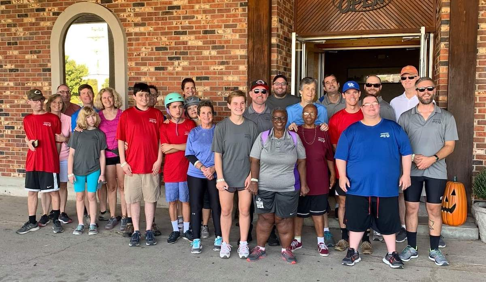
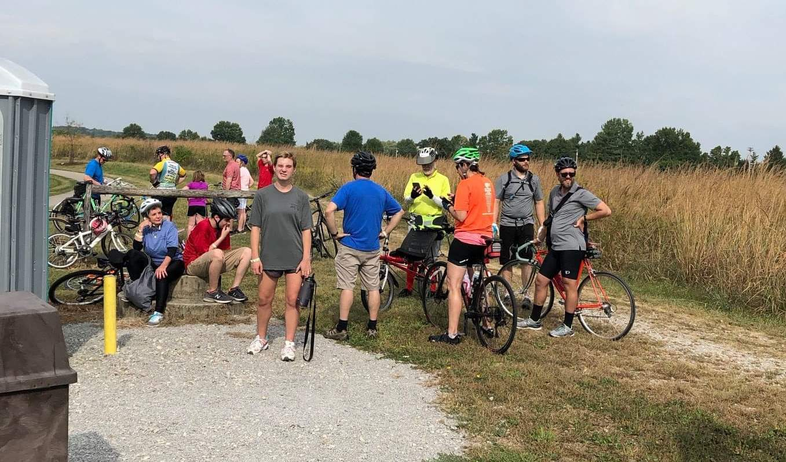

Special Olympics
anecdotes from coaching and athlete support
Sean Crowe | 4/28/2022
Special Olympics
Facts & Figures- Established July 20, 1968; 53 years ago
- First games held in Chicago, IL
- Founded by Eunice Kennedy Shriver, sister to JFK and RFK
Special Olympics
Rosemary Kennedy

- Oldest Kennedy daugher, born September 13, 1918
- Seizures and apparent learning disability as a child
- Underwent prefrontal lobotomy in 1941 when she was 23 years of age
Special Olympics
Timeline- 1962, Shriver Camp
- 1962, Hope for the Retarded / by Eunice Kennedy Shriver
- 1968, First National Games, Chicago, IL
- 1977, First first International Special Olympics Winter games, Steamboat Springs,Co
- 1987, International Summer Games Primetime broadcast
- 1988, Special Olympics recognized by the International Olympics Committee
- 1993, International Winter Games held in Austria, first outside the USA
- 2005, Farrelly Brother's "The Ringer" film debuts, starring Johnny Knoxville and 150 athletes
Special Olympics
Ian Crowe - National Special Olympics experienceSpecial Olympics
Hamilton County, Ohio -- Cycling TeamHamilton Co, Ohio Special Olympics Cycling
Taking a break on the trail
- Volunteer opportunities
- Unified sports
- Circuit and Trail riding
- Fitness and mechanical fundamentals
Thank You
Special Olympics Hamilton County, Ohio